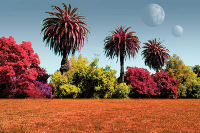
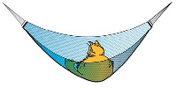
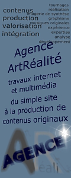
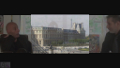
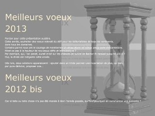
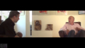

|
|
|
|
|
|
|
Au fil des
dépêches

Naviguer sur Dotapea
|
|
|
Actualités
(blog éditorial du réseau
ArtRéalité)
[accès infos
permanentes]
[conseils d'utilisation
en marge gauche]
|
|
14/10/2013
Fin
L'énorme bug de la messagerie
mentionné précédemment n'a pas été corrigé par OVH, le gestionnaire du serveur dédié qui nous sert de support
informatique depuis sept ans pour les sites Dotapea.com et
ArtRéalité.com, mais nous avons pu en quelque sorte le court-circuiter.
Donc vous pouvez de nouveau nous écrire.
Mais vous ne le devriez pas.
Cette affaire est pour nous la goutte
d'eau. Avant d'en dire plus et après douze ans d'existence,
prenons le temps d'un petit retour sur le passé.
Il y a eu avant tout le mépris des annonceurs et partenaires potentiels français depuis neuf
ans. Comprenez que pour ces personnes, l'Internet est aux médias ce que
le langage Sms est à la langue française. Dit autrement, "le ouèbe sa vo rien" même à 12 000 pages
lues par jour, sauf à payer "une présence via Gougueule paske c un
nom". Que voulez-vous faire ? On a pris le temps de les connaître, les commerciaux
français de ce métier (comme des autres métiers, souvent) : des
réactionnaires caricaturaux, binaires, qui façonnent leurs propres échecs. Pardon de régler des comptes, mais ces
acteurs-ci sont les principaux responsables de cette fermeture, ce serait
donc bien bête de les
oublier au moment de baisser le rideau.
Et puis est survenue cette année une
baisse d'audience alors que nos contenus s'étaient étoffés. De notre
point de vue c'est choquant, difficile à comprendre. Elle pourrait être imputée aux succès croissants de Facebook et de
Twitter.
Ecrire sur Facebook, c'est travailler pour
Facebook. Tracking commercial effréné, pub et auteurs bénévoles, voilà
les ressorts. Twitter ou Google+ n'existeraient pas davantage sans les contenus
naïvement apportés par les internautes à ces géants cotés en bourse
dont ils ont entièrement fait la fortune. Donc un transfert de nos contenus sur ces
médias serait par essence inadmissible, délirant.
Nous garderons en ligne les sites A.R. une
dizaine de mois si Ovh est encore capable d'ici-là de maintenir un serveur dédié
et si les attaques virales de l'an dernier (identifiées en provenance de
l'île de Hainan, République Populaire de Chine et haut lieu réputé de la
piraterie politique et économique) ne se renouvellent pas. Eh oui, repensons au gouvernement
chinois pour qui les mots "Aï weï Weï Liberté Démocratie Chine Tibet
Ouigour Xinyang" mentionnés quelquefois l'an dernier sont un signal
suffisant pour attaquer très violemment une cible informatique y
compris à l'étranger, au plus parfait mépris du droit international. A ceux-là
l'on peut proposer, comme jadis un autre à Fontenoy -
non loin d'ici -, de tirer les premiers, là c'est quand ils veulent pendant
ces dix prochains mois. Et ce serait un beau jour pour mourir. Nous
verrons bien.
En douze ans on n'a peut-être pas tout
essayé, mais beaucoup de choses et pour quoi in fine ?
Pour de bons moments,
plein d'histoires marrantes, parfois éclatantes comme le soleil,
insoupçonnées, oui oui, et moins drôles aussi, atterrantes,
tristes, mais toujours très intenses, et de l'autre côté du média, la
fidélité des lecteurs fut très souvent notre lumière dans ce travail un peu
souterrain en apparence.
Ce travail ressemble un tout petit peu à celui d'un alchimiste.
Enfin, c'est beaucoup trop d'argent dépensé sans
retour, nous pouvons le dire. Ce n'est plus possible. Pas très normal
non plus.
Sans parler du temps passé évidemment, Dotapea et ArtRéalité
coûtent leur prix. Certes rien à voir avec les budgets des médias
classiques mais notre réseau n'est pas fait de millionnaires. Faire
appel aux dons comme le fait Wikipedia, non, c'est hors de nos
intentions et pour nous à la limite du rebutant : nous ne
sommes pas des ONG, prétendre à cela serait évidemment une imposture.
Nous n'étions pas de cette école. Notre
idée directrice était plutôt que tout cela évolue naturellement, en
trouvant de vrais partenaires économiques et non en rançonnant les lecteurs
d'une manière ou d'une autre. Un échec est un échec, difficile de ne pas
s'en rendre compte en 2013. L'énergie dépensée ira dorénavant ailleurs.
Merci, merci infiniment à tous pour l'océan de vos
présences - vous avez été si nombreux ! - et aux fidèles en
particulier ou à ceux qui nous ont écrit, que l'on a rencontrés parfois.
Merci infiniment à celles et ceux qui ont été des participants actifs, en premier lieu à Jean-Louis, l'ami physicien qui a tant apporté à
ces pages notamment via les Dialogues de Dotapea.
C'était une magnifique aventure grâce à
vous, mais elle est sans lendemain dans ce contexte français de blocages
plus que persistants et de montée des extrêmes. Nous espérons avoir apporté un
tout petit quelque chose et nous souhaitons la meilleure
chance à ceux qui prendront le relais. S'il n'y en a pas, tant pis,
suivons le conseil de David Bowie et ne restons pas moroses même quand
un peu tout autour de nous se casse la.... :
Let's Dance !
Emmanuel LUC,
éditeur internet français.
Namur, Belgique.
3/10/2013
Enorme bug de la
messagerie
Une anomalie est apparue : nous ne
recevons presque plus de messages. Il nous a fallu du temps (quinze
jours au total) pour nous en apercevoir et pour le confirmer alors même
que le travail sur les sites continuait. Le bug est en cours de
traitement par la société OVH qui gère le serveur dédié à
Dotapea/ArtRéalité.
Malheureusement, nous n'avons aucune
précision de la part de cette entreprise sur le temps de réparation.
Quelques jours, une semaine, plus ? Aussi pour le moment, ne nous
écrivez pas.
Cette anomalie sans précédent en douze ans
tombe fort mal à propos puisque nous venions de lancer une campagne de
demande d'aide. Un message sera placé sur ce blog dès que la situation
normale sera rétablie.
|
|
|
|
23/9/2013
Les couleurs naturelles
d'une campagne lointaine
La lumière d'un autre soleil et son
filtrage par une autre atmosphère que la nôtre donneraient au mécanisme
naturel de photosynthèse d'autres choix.
Les rayons de fortes et de faibles
longueur d'ondes, le rouge et le bleu, sont absorbés par les
chlorophylles "a" et "b" (la b étant un peu plus centrée, la a
débordant sur les ultraviolets). Mais selon une
étude du Godard Institute de la NASA, il pourrait en être autrement
sur des mondes autrement éclairées.
« "Nous pouvons identifier la longueur
d'onde du candidat le plus fort pour la couleur dominant la
photosynthèse sur une autre planète", dit Nancy King, auteur principal
de l'étude et biométéorologiste à l'Institut Goddard pour les études
spatiales [GISS] de New York. »
(« "We can identify the strongest
candidate wavelengths of light for the dominant color of photosynthesis
on another planet," said Nancy Kiang, lead author of the study and a
biometeorologist at NASA's Goddard Institute for Space Studies, New
York. »)
La biochimie de la chlorophylle est donc
adaptable. L'est-elle par un jeu darwinien, au fil de l'évolution ? L'article ne le précise
pas (mais le suggère). Par contre il indique que les "bandes absorbantes" peuvent
théoriquement s'étendre non seulement sur toutes les couleurs mais aussi jusque dans l'infrarouge.
Autre point fort de l'étude, le fait que parmi les couleurs qui parviennent à
la surface de notre terre, le vert est aussi un peu moins abondant que le
rouge et le bleu. Cela concorde : le moins abondant est le moins absorbé, il y a donc
adaptation. Ce qui autorise à penser que la chlorophylle se serait
également adaptée, mais autrement, dans un milieu lumineux différent.
Par exemple en absorbant plus d'infrarouges parce que ce rayonnement est
plus intense dans cet ailleurs, ou pourquoi pas plus de rouge et de vert,
nous offrant des plantes bleues ?
N'est-ce pas, à bien y réfléchir, une
belle nouvelle ? Celle-là promet des mondes vivants d'aspect non
uniforme mais différent et varié, voire exotique comme le gazon orangé
de l'image de Doug Cummings, ci-contre. Et pourtant, aussi exotiques que
puisse paraître les couleurs de ces paysages, elles sembleraient sans
doute très banales et pour le coup, "toutes naturelles", à d'éventuels
plasticiens natifs.
Amusant n'est-ce pas ? Parce que c'est
probablement vrai.
|
|

[cliquer pour agrandir]
A quoi les plantes
ressembleraient-elles sur d'autres mondes ?
Caltech illustration par
Doug Cummings
|
|
22/9/2013
AJUSTONS !
Signe de la reconnaissance d'un besoin de
plus d'organisation et de précision, Dotapea fait, à l'aide de son cher
espace de communication, une demande d'aide à son lectorat. Pour deux
raisons :
* devant
Google qui semble depuis quelque temps déjà référencer notre site
n'importe comment - cf. les 260 millions de résultats parfaitement
débiles à une simple recherche sur le mot "Dotapea", à tester vous
même dès aujourd'hui -, il nous semble utile et même nécessaire de
multiplier les liens sans quoi nous risquons de devenir invisibles et
inaudibles, même si l'on en est encore loin à ce jour grâce à votre
fidélité. C'est là que
vous, amis lecteurs, pouvez jouer un rôle actif.
* la
relecture, la bonne tenue des pages du site, c'est l'affaire d'un
groupe de lecteurs/correcteurs. Là aussi nous faisons appel à votre
secours.
Enfin, entrer dans un dialogue avec des
personnes coopérant à ces projets et connaissant donc bien Dotapea nous
permettrait de trouver de bonnes suggestions, de potasser de nouveau les
avant-projets et projets actuels, bref de travailler de manière plus
"ample" et "moins floue", si ces mots conviennent.
Pour plus d'informations, cliquer
ici ou sur l'image ci-contre. Et merci
pour tout feedback, toute prise de contact à ce sujet.
|
|
|
|
19/9/2013
Modifications pratiques
Recherches
* Le paramétrage a été totalement refait
* Dorénavant, les recherches sont
effectuées sur Dotapea.com exclusivement
* La page de résultats fait apparaître des
images miniatures
* Sur n'importe quelle page, après avoir
tapé l'argument de recherche, il suffit d'appuyer
sur Entrée. Il n'est plus nécessaire de cliquer sur "Chercher".
* La zone d'entrée des arguments est
beaucoup plus large.
Bannière du haut
* Elle a été légèrement simplifiée de
sorte que certaines anomalies d'affichage n'apparaissent plus avec les
fenêtres étroites. Les fonctions sont inchangées et l'image principale
également.
Glossaire
* L'index alphabétique bénéficie d'un
design nouveau (encore merci, Blender3d)
* Quelques petites erreurs de cadrage ont
été corrigées dans l'ensemble des pages de la section.
14/9/2013
Recettes de Raadvad
Le Courrier des Lecteurs continue à
rattraper son retard à la diffusion publique. A cette occasion, notons
dans ce blog une seconde mention d'un document fort intéressant, publié
par iBiblio.org et créé par Søren Vadstrup pour le bouillonnant Centre
Raadvad, au Danemark.
Ce document évoque des procédés
traditionnels de peinture, dont certains sont des classiques (utiles) et
d'autres ont de quoi titiller la curiosité de nos chers Lecteurs. Ainsi
découvre-t-on le sang de boeuf, la peinture à l'algue rouge (carraghénine)
le l'huile au goudron de bois, qui n'étaient pas mentionnés sur Dotapea.
Ce texte est en accès gratuit. Pour le
rendre plus accessible, nous avons traduit l'index des recettes.
Pourquoi ne pas y jeter un coup d'oeil ?
 Lien
Lien
|
|
|
Effet Rayleigh et
nébuleuses
Sur Dotapea, les modifications et ajouts
ont lieu un peu tout le temps. Parfois, même pour de "petites choses",
nous aimerions faire partager nos découvertes qui sont le plus souvent
noyées dans la masse rédactionnelle du site.
Il en va ainsi d'un court passage ajouté
au chapitre VII des Dialogues de Dotapea. Qui niera la poésie du tout
scientifique effet de diffusion Rayleigh ? Lien sur l'image ci-contre.
9/9/2013
|
|
Copyright ©
Robert
Gendler
(cité in
Nasa
Apod du 28/12/2001)
|
Nanotubes, graphène,
fullérène et diamant bleu :
un nouvel article
consacré aux applications dans le domaine des métamatériaux polycarbonés
Pas d'effets d'annonces, pas de promesses
de nouveaux mondes ou de lendemains de cristal : le respect de la
plus stricte ligne
éditoriale "Art et Réalité" est ici de mise.
Après une exploration des concepts de
conduction électrique et de
polycycles moléculaires, nous en venons
au vif du sujet : les (maigres) applications artistiques, architecturales et
autres de ces matériaux trop souvent dépeints comme des panacées
universelles. Pour conclure sur une constatation : le chemin parcouru
pour comprendre vaut peut-être plus que les résultats obtenus.
Lien
23/8/2013
Plus de pub Google
Nous avons supprimé la publicité Google du
site Dotapea.
La raison en est que Dotapea ne souhaite
pas suivre la tendance au bas prix pratiqué sur l'internet. Poursuivre
deviendrait absurde voire préjudiciable dans une certaine mesure.
Nous invitons tous les éditeurs à faire de
même. Une réaction globale pourrait avoir un impact. Nous ne sommes pas
un média au rabais propice au parasitage, nos espaces ne sont pas à la disposition des agents
publicitaires qui certes obtiennent, eux, de bons rapports mais font selon
nous un très mauvais calcul. Sans nous, pas de profits publicitaires sur
l'internet.
10/8/2013
[Editorial]
Pernicieuses Perséides
(le cosmos n'est
pas un espace imaginaire)
Occasion de célébrer une ou plusieurs
« Nuits des étoiles » devenues populaires, l'événement annuel des
Perséides, insistantes Cassandre, nous délivre en réalité un fort sombre
présage.
|
|
 |
Comme nous l'apprend une recherche sur
l'Internet - en général mieux documenté en anglais sur ce sujet -, cet
"essaim" d'étoiles filantes est en quelque sorte le résidu du passage de
la comète Swift-Tuttle. Notre terre et la
comète ont la fâcheuse particularité de croiser leurs plans orbitaux
pourtant très différents de manière plutôt dangereuse.
Le périhélie cométaire est de 0,96UA (96%
de la distance terre-soleil). Ainsi, lorsque l'astre croise l'orbite
terrestre en la frôlant immanquablement tous les 133 ans, sa vitesse est
maximale, d'environ 60km/s.
L'astre, composé de glace et de roche, a
un noyau dit "dur" de 26km de diamètre. L'outil en ligne
« Earth impact effects program » (Imperial
College of London, Purdue University,
lien
externe) nous permet de nous faire une représentation de la violence
d'un éventuel impact.
On ne citera que quelques chiffres : la
profondeur théorique d'un cratère continental serait de l'ordre de 60km,
ce qui signifie plutôt une véritable ouverture de la croûte terrestre.
Une chute dans la mer, pour une profondeur
océanique moyenne (3 750m), mordrait également sur le manteau et
créerait sur le fond marin un cratère de 300km de diamètre. Elle
engendrerait un tsunami dont la hauteur serait de 1 000 à 2 100m, à
comparer avec les 15m du tsunami de Tohoku en 2011.
L'impact, qu'il soit terrestre ou
océanique, provoquerait un séisme de magnitude 11 au moins, soit plus
qu'aucun séisme répertorié, ce qui n'a rien de surprenant s'agissant
d'un corps incident dont le diamètre est supérieur de 10km à l'astre
supposé avoir provoqué l'extinction des dinosaures.
Bien sûr il faut nuancer ces chiffres car
la puissance de l'impact dépend beaucoup de l'angle d'incidence (45°
dans cette estimation), de sa position sur la sphère terrestre et de la
vitesse relative des deux corps. Mais chacun aura compris qu'il
s'agirait de toute façon d'un événement absolument terrible.
Selon les sources, une telle catastrophe
ne peut que se produire, mais les
prévisions orbitales nous donnent de 1000 à 2000 ans de sursis. Un
chiffre purement indicatif car nous ne savons rien de l'état structurel
du noyau de Swift-Tuttle, ce qui rend son évolution orbitale modérément
prévisible car des sections peuvent se détacher et modifier sa
trajectoire.
|
|
Swift-Tuttle
Copyright © 1992 H. Mikuz
(Crni Vrh Observatory, Slovenia) |
Ce n'est pas le seul danger cosmique qui
nous guète. L'autre grand péril est encore plus immédiat : l'explosion
programmée de la géante Bételgeuse. Sa masse de quinze millions de
soleils peut littéralement nous exploser au nez maintenant ou d'ici
quelques milliers d'années tout au plus, noyant notre planète dans un
flux de rayonnements, puis de particules très énergétiques, auquel la
vie aurait bien du mal à survivre (surtout à survivre en l'état) si nous
ne nous y préparions pas.
S'y préparer implique un effort immense,
mais c'est ça ou bien un cataclysme. Ce n'est pas abstrait, ce n'est pas
non plus de la science-fiction.
Ces deux dangers majeurs sont tout à fait
identifiés par les astronomes et bien documentés.
|
|
Bételgeuse par Hubble
3/3/1995
Il s'agit de l'une des
premières images d'une surface stellaire.
|
Ainsi, pour cette célébration de la Nuit
des étoiles, ArtRéalité (qui parle d'art et de réalité), aimerait
rappeler que nous sommes tout petits et infiniment
fragiles à ce stade de notre évolution (c'est le sens de
l'illustration ci-contre). L'espace n'est pas une abstraction et il peut
nous le rappeler à tout moment avec une brutalité radicale - quoique
très ordinaire à l'échelle astronomique -, ce que l'observation des
étoiles filantes estivales ne permet pas forcément de bien saisir.
Il serait donc utile de commencer à
"grandir".
L'essaim des Perséides devrait nous
encourager à mettre en place des parades et, plus globalement, à
envisager notre action dans l'univers autrement que comme de coûteuses,
inutiles et puériles parades de cow-boys en orbite, sur la lune ou sur
Mars. La présence humaine n'est vraiment pas prioritaire.
Mais même l'initiative
Planetary Resources, initiée par les
fondateurs de Google et destinée à exploiter le minerai des astéroïdes
notamment à des fins d'utilisation terrestre grâce à des moyens
cybernétiques un peu plus réalistes, pourrait si elle avait une chance
d'aboutir nous priver d'un matériau qui sera demain d'une nécessité
vitale dans l'espace.
Lien
externe.
En d'autres termes, le
cosmos n'est pas un nouveau Far-West, n'est pas Star Trek ni Luna-Park
ni Outland (et ses mines), n'est en fait ni une plaisanterie, ni un
terrain de jeu, ni un univers artistique. Nous sommes dedans, c'est un
seul monde réel.
Emmanuel LUC
éditeur Dotapea/ArtRéalité
Profondeville, Belgique
7/8/2013
|
|
La terre et Saturne
Sonde Cassini, 22/7/2013
Cliquer sur l'image pour afficher la photo en grand format sur le site
de la Nasa. |
Bleu de France
Quelques mots sur ce diamant
extraordinaire - non seulement superbe et chargé d'une histoire
impressionnante, mais aussi phosphorescent en rouge et semi-conducteur -
dans l'article consacré aux bleus froids.
Lien
22/7/2013
Les sanglots longs des violons de
l'automne
Bercent mon coeur d'une langueur
monotone.
Ce site est désormais dédié
* comme
auparavant, à Baruch Spinoza et Giordano Bruno
* et
dorénavant aux victimes du national-socialisme et à la Résistance.
Cette décision intervient après les
déclarations insupportables d'un maire U.D.I., M. Gilles
Bourdouleix (France).
Lien.
Elle est destinée à rappeler des règles
reconnues à l'échelle internationale et, concernant l'objet de ce site,
à nous souvenir qu'un passé encore récent - à peine septante ans -
démontra que l'art et la science ne peuvent exister sous le règne de
régimes infâmes si ce n'est sous la forme d'une Résistance réelle.
Il faut choisir entre art et sciences ou
bien nazisme. Ce n'est pas compatible.
Emmanuel Luc, éditeur
1/7/2013
|
|

|
La conduction électrique
Toujours dans l'optique d'impulser une
curiosité des artistes (et des autres) pour les nanosciences, Dotapea
publie un article consacré à la conduction électrique à la fois en
complément de l'extension de l'article Valence annoncée
ci-dessous le 21/6 et de la
refonte de l'article Polycycles annoncée le 12/6, et en préparation d'un
autre article abordant les méta-matériaux polycycliques sous un angle
beaucoup plus panoramique.
Dit autrement, au risque de solliciter
votre patience chers lecteurs, on ne peut construire un édifice même
modeste sans
commencer par les fondations :)
Lien
21/6/2013
Conducteurs, isolants,
semi-conducteurs...
Pourquoi un corps est-il conducteur,
semi-conducteur ou isolant ? Des éléments de réponse dans une nouvelle
extension de l'article consacré à la valence.
Lien
Nous avons voulu traiter ici de cette
partie de la théorie des bandes aussi clairement que possible, la
documentation disponible sur le réseau n'étant à ce jour pas
particulièrement limpide. Ceci en prévision d'un futur développement sur
les polycyles bidimensionnels, sujet d'avenir, fascinant et très pointu,
que nous avons à peine commencé à évoquer juste ci-dessous.
12/6/2013
|
|
 |
Du nouveau...
...dans le fonds documentaire. L'article
consacré aux molécules polycycliques a été récrit et illustré (cliquer
sur l'image ci-contre). Par ailleurs, les termes
sorption, absorption et adsorption sont maintenant décrits.
10/6/2013
Courrier des
lecteurs : un rattrapage toujours en cours
Le site continue à rattraper son retard.
Il est vrai que le volume des questions des lecteurs est impressionnant.
La profondeur et la qualité des questionnements convoque souvent les
acteurs du Réseau ArtRéalité.
N'hésitez pas à nous
écrire.
23/5/2013
Changement de régie
Depuis hier, une nouvelle régie de
communication est en place. Disposition temporaire, transition entre une
mécanique pilotée par la société QuidNovi et une future solution
intégrée à une refonte des sites ArtRéalité sur plateforme Wiki-wiki-web.
Il s'agit donc d'un changement durable
sans être définitif.
Il faut aussi entendre par ce changement
que nous sommes moins ouverts dorénavant à la présence d'annonceurs,
surtout dans des cadres cheap/low cost. Les candidats peuvent cependant
nous écrire.
|
|
 |
Agence ArtRéalité
La première campagne de cette régie est
consacrée à notre nouvelle activité d'agence multimédia internet.
Pourquoi une agence ?
Parce que c'est pour nous un moyen de
faire vivre le Réseau ArtRéalité - ce qui a un coût - et de le
développer, mais aussi parce que nous avons acquis un savoir-faire au
cours de douze années de présence à la fois sur internet et dans le
monde réel.
Cette agence ne limite pas ses
interventions au seul univers artistique. Elle répond à un large
éventail de besoins internet (voire intranet) et multimédia sur la base
d'une "philosophie du contenu". Par expérience, nous savons que la
pierre angulaire du développement informatique est actuellement la
production de contenus : textes, sons et images. Au-delà il faut
intégrer et valoriser ces contenus - parfois même au-delà de l'Internet
- et c'est aussi une spécialité. Nous pouvons au choix proposer une
production, une intégration ou bien les deux.
Agence.ArtRéalité.com
6/5/2013
Bellastock 2013
Cette année à Versailles sur le site
désormais civil de l'ancienne base de Pion (21 hectares, 1 000
participants), la ville éphémère de ce festival d'architecture sera
faite de... plantes !
Citons les idées-forces :
> une simplicité
technique : c'est l'architecture du peu, puisqu'elle consiste à
faire avec ce qui est immédiatement disponible. C'est une approche
particulière des cycles et des mouvements de la matière en architecture,
thème cher à Bellastock.
> une esthétique propre : les constructions
en végétal sont d'une beauté brute, on y reconnaît la nature de façon
directe, sans détour.
> une révolution des concepts : le
rapprochement brut avec le naturel fait vaciller la notion de durabilité
(omniprésente dans les démarches environnementales et écologistes). Les
structures en végétal sont naturellement éphémères (donc non durables
par définition) : le bois pourrit, les végétaux envahissent une
construction qui finit par se décomposer.
> une richesse architecturale sans borne et
toujours renouvelée
Cette année encore, ArtRéalité/Dotapea ne
saurait trop conseiller cette visite aux personnes intéressées par les
arts plastiques car les préoccupations en jeu ici les concernent autant
que les architectes.
Portes ouvertes dimanche 19 mai.
Présentation, informations
cliquer
ici
Le site complet :
bellastock.com
Pour mémoire :
interview filmée de Grégoire Saurel in Les entretiens à
l'Entrepôt (prod. ArtRéalité 2012).
27/4/2013
Publication du courrier
des lecteurs
Nous pouvons annoncer la reprise de
cette publication. Elle sera très progressive car elle était arrêtée
au mois d'août 2011.
C'est, il faut le préciser, un long
travail.
Nous commençons par l'intéressant apport
d'une lectrice concernant le jaunissement des huiles.
Cliquer ici.
8/4/2013
Déménagement
|
|
 |
Le siège du Réseau ArtRéalité n'est plus
à Paris ni même en France.
Les raisons sont multiples mais dans ce
contexte, on ne citera que la principale : la France est trop chère.
Paris deux fois plus que Bruxelles (où la vie artistique est aussi
animée) et non loin de trois fois plus que Montréal.
On n'épiloguera pas davantage. A ce
stade, c'est inutile.
A nous donc, entre autres joies, les superbes berges de la
Meuse et les vibrations de la ville de Bruxelles. La Belgique est un
pays charmant.
Emmanuel LUC, éditeur
|
|
|
|
10/3/2013
Entretiens à
l'Entrepôt,
nouvelle vidéo en ligne :
13 - tournages 31/5 et
26/7, publication 7/3/2013,
Michel Menu, directeur de la Recherche du C2RMF
Sous le Louvre, un centre de recherche
palpite. On vient du monde entier explorer des oeuvres, parfois à
l'atome près. Cependant, les esprits ont renoncé dès le début de cette
aventure à toute rupture entre arts et sciences, entre approche
purement technique et théorie artistique.
-
1ère partie : 22mn
|
|

|
-
2ème partie : 23mn
Autres nouvelles
Probable changement de siège d'ici la fin
du mois prochain. De Paris nous passons à Bruxelles (si tout va bien)
non pour y faire des économies d'impôts mais parce que le m2
y est abordable, ce qui n'est plus le cas en France où pour une raison
inconnue il vaut rien moins que le double. Trop cher pour nous.
Une vidéo sera tournée sur les nouveaux
lieux pour expliciter ce choix plus en détail. Et parler des autres
projets en cours.
1/2/2013
Les nouvelles
L'essentiel consiste dans le rattrapage
des montages un peu en retard des Entretiens aux Entrepôts. D'autres
initiatives sont au programme mais patience chers lecteurs, l'heure
des annonces n'est pas encore venue.
11/1/2013
Les voeux à la carte
2013 ou 2012 bis, quel que soit votre
choix, bonne année chers amis lecteurs.

Cliquer pour agrandir
|
|
 |
|
Archives
2012
2011
2010
2009 - 2
2009 - 1
2008 - 2
2008 - 1
2007
_____
 Informations permanentes
Informations permanentes
Pourquoi un oeuf comme logo ?
Explications dans l'article consacré à l'oeuf.
Qui sommes-nous ? Que signifie "Dotapea" ?
Cliquer ici pour obtenir quelques
réponses...
Dédicaces
Ce site est dédié à Giordano Bruno, à Baruch Spinoza, aux victimes du
national-socialisme et à la Résistance.
Merci de parcourir nos pages
Réseau ArtRéalité
|
|
|
|
|
Conseils pour utiliser au mieux Dotapea.com
agrandir la fenêtre de votre navigateur au
maximum. Si nécessaire, fermez la fenêtre interne des favoris.
utiliser un format d'affichage d'au moins 1024x768 pixels. Pour la
plupart des pages, une largeur de 800 suffit.
le confort maximal de
navigation est obtenu avec
FireFox.
pour tout questionnement sur la navigation générale dans Dotapea,
voir le
mode d'emploi
vidéo.
calibrer les couleurs de l'écran.
Lire la note "réglage couleurs" de la page d'accueil.
Cette note est pourvue d'un lien vers une "page calibrage" à accès gratuit
sur pourpre.com.
Problèmes d'impression
voir ici
Vous utilisez un
Macintosh et Safari et certains éléments visuels s'affichent
bizarrement. Les plus récentes versions ne posent plus guère ce problème,
donc une mise à jour suffit.
Il en va de même pour Opera.
Les visuels communication
ne s'affichent pas dans la marge grise, à droite de la fenêtre, comme
elles devraient le faire sagement. Essayez d'agrandir la fenêtre au
maximum, supprimez la "barre de boutons" (Macintosh) ou de "favoris"
(Internet Explorer).
______
|
|
|
Copyright © www.dotapea.com.
Tous droits réservés
|
Retour début de page
|

Communication


|
|


{kind=link}
{kind=link}